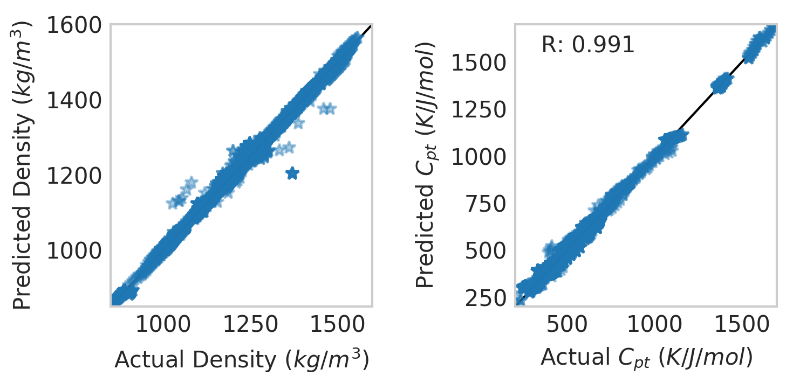

Getting started¶
Thanks for checking out Salty!
The purpose of Salty is to extend some of the machine learning ecosystem to ionic liquid (IL) data from ILThermo.
Obtaining Smiles Strings¶
Salty operates using the simplified molecular-input line-entry system (SMILES). One of the core methods of Salty is the check_name() function that converts IUPAC naming to Smiles:
import salty
smiles = salty.check_name("1-butyl-3-methylimidazolium")
print(smiles)
CCCCn1cc[n+](_static/c1)C
once we have a smiles representation of a molecule, we can convert it into a molecular object with RDKit:
%matplotlib inline
from rdkit import Chem
from rdkit.Chem import Draw
fig = Draw.MolToMPL(Chem.MolFromSmiles(smiles),figsize=(5,5))

Once we have a molecular object, we can generate many kinds of bitvector representations or fingerprints.
Fingerprints can be used as descriptors in machine learning models, uncertainty estimators in structure search algorithms, or, as shown below, to simply compare two molecular structures:
ms = [Chem.MolFromSmiles("OC(=O)C(N)Cc1ccc(O)cc1"), Chem.MolFromSmiles(smiles)]
fig=Draw.MolsToGridImage(ms[:],molsPerRow=2,subImgSize=(400,200))
fig.save('compare.png')
from rdkit.Chem.AtomPairs import Pairs
from rdkit.Chem import AllChem
from rdkit.Chem.Fingerprints import FingerprintMols
from rdkit import DataStructs
radius = 2
fpatom = [Pairs.GetAtomPairFingerprintAsBitVect(x) for x in ms]
print("atom pair score: {:8.4f}".format(DataStructs.TanimotoSimilarity(fpatom[0], fpatom[1])))
fpmorg = [AllChem.GetMorganFingerprint(ms[0],radius,useFeatures=True),
AllChem.GetMorganFingerprint(ms[1],radius,useFeatures=True)]
fptopo = [FingerprintMols.FingerprintMol(x) for x in ms]
print("morgan score: {:11.4f}".format(DataStructs.TanimotoSimilarity(fpmorg[0], fpmorg[1])))
print("topological score: {:3.4f}".format(DataStructs.TanimotoSimilarity(fptopo[0], fptopo[1])))
atom pair score: 0.0513
morgan score: 0.0862
topological score: 0.3991

check_name is based on a curated data file of known cations and anions
print("Cations in database: {}".format(len(salty.load_data("cationInfo.csv"))))
print("Anions in database: {}".format(len(salty.load_data("anionInfo.csv"))))
Cations in database: 316
Anions in database: 125
A Few Useful Datafiles¶
Salty contains some csv datafiles taken directly from ILThermo: heat capacity (constant pressure), density, and viscosity data for pure ILs. The aggregate_data function can be used to quickly manipulate these datafiles and append 2D features.
rawdata = salty.load_data("cpt.csv")
rawdata.columns
Index(['Heat capacity at constant pressure per unit volume, J/K/m<SUP>3</SUP>',
'Heat capacity at constant pressure, J/K/mol',
'Heat capacity at constant pressure<SUP>*</SUP>, J/K/mol',
'Pressure, kPa', 'Temperature, K', 'salt_name'],
dtype='object')
devmodel = salty.aggregate_data(['cpt', 'density']) # other option is viscosity
aggregate_data returns a devmodel object that contains a pandas dataframe of the raw data and a data summary:
devmodel.Data_summary
| 0 | |
|---|---|
| Unique salts | 109 |
| Cations | array(['CCCC[n+]1ccc(cc1)C', 'CCCCCCCCn1cc[n+]... |
| Anions | array(['[B-](_static/F)(F)(F)F', 'F[P-](_static/F)(F)(F)(F)F',... |
| Total datapoints | 7834 |
| density | 847.5 - 1557.1 |
| cpt | 207.47 - 1764.0 |
| Temperature range (K) | 100.0 - 60000.0 |
| Pressure range (kPa) | 273.15 - 463.15 |
and has the builtin 2D features from rdkit all scaled and centered:
devmodel.Data.columns
Index(['steiger-anion', 'Marsili Partial Charges-anion', 'BalabanJ-anion',
'BertzCT-anion', 'Ipc-anion', 'HallKierAlpha-anion', 'Kappa1-anion',
'Kappa2-anion', 'Kappa3-anion', 'Chi0-anion',
...
'VSA_EState10-cation', 'Topliss fragments-cation', 'Temperature, K',
'Pressure, kPa', 'Heat capacity at constant pressure, J/K/mol',
'Specific density, kg/m<SUP>3</SUP>', 'name-anion', 'smiles-anion',
'name-cation', 'smiles-cation'],
dtype='object', length=196)
The purpose of the data summary is to provide historical information when ML models are ported over into GAINS. Once we have a devmodel the underlying data can be interrogated:
import matplotlib.pyplot as plt
import numpy as np
df = devmodel.Data
with plt.style.context('seaborn-whitegrid'):
fig=plt.figure(figsize=(5,5), dpi=300)
ax=fig.add_subplot(111)
scat = ax.scatter(np.exp(df["Heat capacity at constant pressure, J/K/mol"]), np.exp(
df["Specific density, kg/m<SUP>3</SUP>"]),
marker="*", c=df["Temperature, K"]/max(df["Temperature, K"]), cmap="Purples")
plt.colorbar(scat)
ax.grid()
ax.set_ylabel("Density $(kg/m^3)$")
ax.set_xlabel("Heat Capacity $(J/K/mol)$")

Build NN Models with Scikit-Learn¶
Salty’s devmodel_to_array function automatically detects the number of targets in the devmodel and creates train/test arrays accordingly:
from sklearn.model_selection import cross_val_score
from sklearn.neural_network import MLPRegressor
from sklearn.multioutput import MultiOutputRegressor
model = MLPRegressor(activation='logistic', alpha=0.92078, batch_size='auto',
beta_1=0.9, beta_2=0.999, early_stopping=False, epsilon=1e-08,
hidden_layer_sizes=75, learning_rate='constant',
learning_rate_init=0.001, max_iter=1e8, momentum=0.9,
nesterovs_momentum=True, power_t=0.5, random_state=None,
shuffle=True, solver='lbfgs', tol=1e-08, validation_fraction=0.1,
verbose=False, warm_start=False)
multi_model = MultiOutputRegressor(model)
X_train, Y_train, X_test, Y_test = salty.devmodel_to_array(devmodel, train_fraction=0.8)
multi_model.fit(X_train, Y_train)
MultiOutputRegressor(estimator=MLPRegressor(activation='logistic', alpha=0.92078, batch_size='auto',
beta_1=0.9, beta_2=0.999, early_stopping=False, epsilon=1e-08,
hidden_layer_sizes=75, learning_rate='constant',
learning_rate_init=0.001, max_iter=100000000.0, momentum=0.9,
nesterovs_momentum=True, power_t=0.5, random_state=None,
shuffle=True, solver='lbfgs', tol=1e-08, validation_fraction=0.1,
verbose=False, warm_start=False),
n_jobs=1)
We can then see how the model is performing with matplotlib:
X=X_train
Y=Y_train
with plt.style.context('seaborn-whitegrid'):
fig=plt.figure(figsize=(5,2.5), dpi=300)
ax=fig.add_subplot(122)
ax.plot([0,2000], [0,2000], linestyle="-", label=None, c="black", linewidth=1)
ax.plot(np.exp(Y)[:,0],np.exp(multi_model.predict(X))[:,0],\
marker="*",linestyle="",alpha=0.4)
ax.set_ylabel("Predicted $C_{pt}$ $(K/J/mol)$")
ax.set_xlabel("Actual $C_{pt}$ $(K/J/mol)$")
ax.text(0.1,.9,"R: {0:5.3f}".format(multi_model.score(X,Y)), transform = ax.transAxes)
plt.xlim(200,1700)
plt.ylim(200,1700)
ax.grid()
ax=fig.add_subplot(121)
ax.plot([0,2000], [0,2000], linestyle="-", label=None, c="black", linewidth=1)
ax.plot(np.exp(Y)[:,1],np.exp(multi_model.predict(X))[:,1],\
marker="*",linestyle="",alpha=0.4)
ax.set_ylabel("Predicted Density $(kg/m^3)$")
ax.set_xlabel("Actual Density $(kg/m^3)$")
plt.xlim(850,1600)
plt.ylim(850,1600)
ax.grid()
plt.tight_layout()

Build Models with Keras¶
The above sklearn model has a very simple architecture (1 hidden layer with 75 nodes) we can recreate this in Keras:
from keras.layers import Dense, Dropout, Input
from keras.models import Model, Sequential
from keras.optimizers import Nadam
X_train, Y_train, X_test, Y_test = salty.devmodel_to_array\
(devmodel, train_fraction=0.8)
model = Sequential()
model.add(Dense(75, activation='relu', input_dim=X_train.shape[1]))
model.add(Dropout(0.5))
model.add(Dense(2, activation='relu'))
model.compile(optimizer="adam",
loss="mean_squared_error",
metrics=['mse'])
model.fit(X_train,Y_train,epochs=1000,verbose=False)
<keras.callbacks.History at 0x130526dd8>
X=X_train
Y=Y_train
with plt.style.context('seaborn-whitegrid'):
fig=plt.figure(figsize=(5,2.5), dpi=300)
ax=fig.add_subplot(122)
ax.plot([0,2000], [0,2000], linestyle="-", label=None, c="black", linewidth=1)
ax.plot(np.exp(Y)[:,0],np.exp(model.predict(X))[:,0],\
marker="*",linestyle="",alpha=0.4)
ax.set_ylabel("Predicted $C_{pt}$ $(K/J/mol)$")
ax.set_xlabel("Actual $C_{pt}$ $(K/J/mol)$")
#ax.text(0.1,.9,"R: {0:5.3f}".format(multi_model.score(X,Y)), transform = ax.transAxes)
plt.xlim(200,1700)
plt.ylim(200,1700)
ax.grid()
ax=fig.add_subplot(121)
ax.plot([0,2000], [0,2000], linestyle="-", label=None, c="black", linewidth=1)
ax.plot(np.exp(Y)[:,1],np.exp(model.predict(X))[:,1],\
marker="*",linestyle="",alpha=0.4)
ax.set_ylabel("Predicted Density $(kg/m^3)$")
ax.set_xlabel("Actual Density $(kg/m^3)$")
plt.xlim(850,1600)
plt.ylim(850,1600)
ax.grid()
plt.tight_layout()

These are all the basic Salty functions for now!